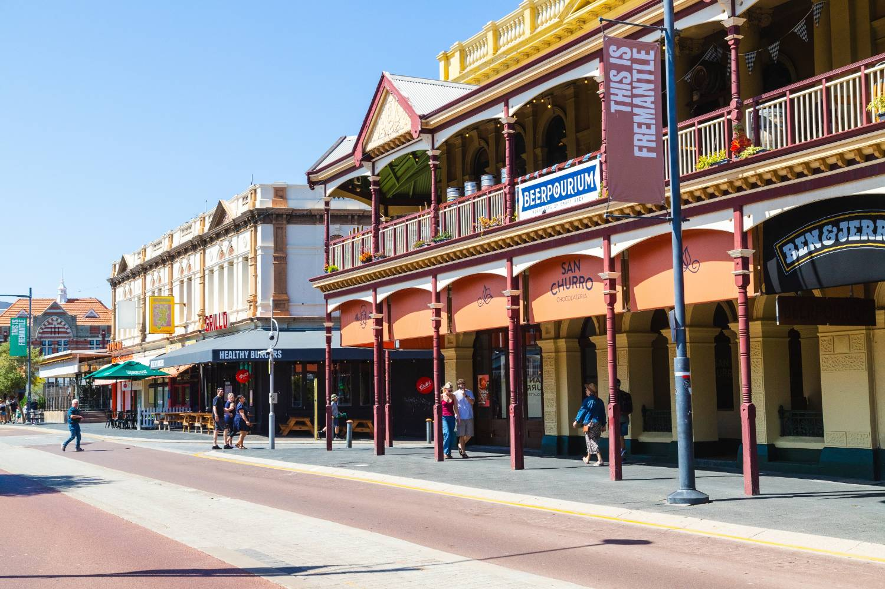

From Mandurah the weekend goes three ways: jarrah forest inland, a national park and beaches to the south, and Perth and Fremantle an easy hour north.
Inland — the jarrah forest
Dwellingup, about forty minutes into the hills, is the gateway to the northern jarrah forest and a hub for the Munda Biddi cycle trail and the Bibbulmun walking track, with mountain biking, whitewater on the Murray and cool green forest that feels a world away from the coast. It is the classic Mandurah escape when summer gets serious.
Coast, park and city
South, Yalgorup National Park holds quiet beaches and the thrombolites at Lake Clifton — living rock structures among the oldest records of life on earth. North, Perth and Fremantle are close enough for a spontaneous day: markets, the port city’s cafes and bars, galleries and the things a capital does that a coastal city does not.

Forest one way, a national park the other, the capital an hour north. Mandurah’s weekends are wider than the city itself.